Simulating Nature¶
What makes quantum computing fundamentally different from classical computing? Very briefly, the physics going on inside the computer. To help understand this, it’s useful to abstract from specific computational models, and instead think about physical systems in general as black boxes where initial conditions go in, we wait for some time, and then observe. In between, physics happens. The job of a physicist is to work out the laws of Nature which govern the “in between”, also called the time evolution or dynamics of the system.
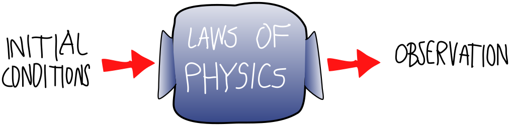
Often, even knowing the laws of physics does not allow us to predict what the black box will do to some input, at least with pen and paper. The math is just too hard. An example is the three-body problem. If three planets interact gravitationally, they perform a do-si-do so complex that there is no explicit mathematical formula for it! In this case, we can do something more radical than math. We can use our knowledge of the laws of physics to make our own black box, one that imitates or simulates the black box of Nature. We call these human-made black boxes computers.
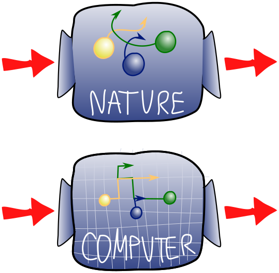
Most physical laws are continuous, in the sense that they act on systems that cannot be split into a finite set of components. In contrast, most computers (though not all, e.g., a slide rule) are discrete, acting only on a finite number of components. So to turn continuous laws into discrete computations, we need to approximate. The better we want our approximation to be, the more computing power we will need, measured either in computing steps or memory allocation. Computing power therefore turns out to be a major limiting factor in how well we can understand the complicated physical systems around us.
Let’s talk about some broad classes of black boxes. The first is classical deterministic systems, where a given input always produces the same output. “Classical” here refers to “classical physics”, the set of natural laws governing the macroscopic world and with which we are most familiar. Most of classical physics, from mechanics to electromagnetism to gravity, takes the form of a classical deterministic box.
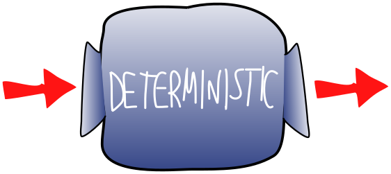
Our model problem will involve coins, though really, this is just a colourful way to talk about binary digits. So, let’s consider a system of \(n\) coins lying on a table. Each coin can be in one of two states: heads (\(0\)) or tails (\(1\)). We will describe the state of the system by a vector of \(n\) bits, \(\mathbf x =(x_1,x_2,\dots,x_n)\in{0,1}^n\)
A second, more general class is classical random systems. Here, an input sometimes results in one output, sometimes in another, with the output varying randomly. One way this randomness can arise is from dynamics which are in fact deterministic, but where we ignore (or don’t have access to) certain details of the system. The most famous example is statistical mechanics, the mathematical formalism underlying thermodynamics. It turns out that it is not just impossible, but useless and unnecessary, to keep track of the precise deterministic evolution of each of the \(~10^{26}\) particles in a handful of dust. It is much better to talk about the statistical tendencies of this handful!
Suppose that we are now allowed to flip our \(n\) coins, and introduce random outcomes. In particular, we’ll assume that black boxes can be described by conditional probabilities,
The class of quantum systems is of most interest to us. Like random classical systems, in a quantum system, different inputs can lead to different, random observations. But these outcomes have some curious features that cannot be explained by classical randomness.
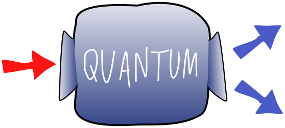
Let’s imagine that our set of coins are now quantum, i.e., we now have \(n\) qubits described by a state \( \left|\psi\right\rangle \). There is an important difference in simulating the state of the classical and quantum system.
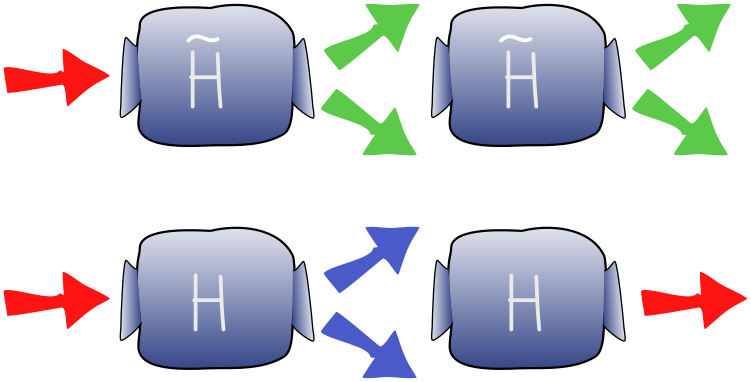
We will imagine we have the ability to prepare the system in some specific configuration \( \left|x\right\rangle \), and observe in the computational basis after applying the black box, with probabilities $\( p(\mathbf y | \mathbf x) = \text {probability of observing y given input x} \)$
as above. This looks very similar to the classical random case, and it’s tempting to conclude that we could just simulate the \(n\)-qubit system using \(n\) random bits. In the next exercise, you’ll see why this doesn’t work!
Send it after class¶
a) Consider a single-qubit quantum circuit consisting of a single Hadamard gate \(H\). Write down the conditional probabilities \(p(\mathbf y | \mathbf x)\) for measurement outcome \(y\) after applying this “black box” to input state \( \left|x\right\rangle \) where \(x,y\in \{0,1\}\) (b) If this black box was classically random, call it \(\tilde{H}\), what would be the result of applying it twice? What is the probability distribution after applying two Hadamard gates?
Two Hadamard gates \(H\) gives us a deterministic result, while repeating the random gate \(\tilde{H}\) looks just like doing a single random gate \(\tilde{H}\). Clearly, the nature of time evolution in quantum systems is very different even from classical random systems. In the next section, we’ll explore this time evolution in much greater detail!
Unitaries¶
Evidently, the black boxes in quantum mechanics do something over and above the black boxes in a random classical system. But it can’t be too different, since we still have observation probabilities \(p(\mathbf y | \mathbf x) \) which add up to \(1\) when we fix \(x\) and sum over \(y\). Recall the theory of projective measurements, which tells us that if the state of the system is \( \left|\psi\right\rangle \), the probability of observing the basis state \(y\) is $\( p(\mathbf y | \mathbf x) = \left| \left\langle y \middle| \psi \right\rangle \right|^2 = \left( \left\langle y \middle| \psi \right\rangle \right)^\dagger \left( \left\langle y \middle| \psi \right\rangle \right) \)$
Suppose that our black box acts as a linear operator \(U\), taking an initial state \( \left|x\right\rangle \) to the state \(U \left|x\right\rangle = \left|\psi\right\rangle \) 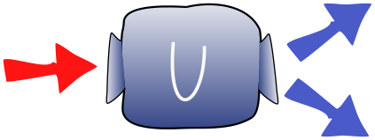
Then the requirement that the conditional probabilities \(p(\mathbf y | \mathbf x) \) add to \(1\) becomes $\( \sum_{y} \left( \left\langle y \middle| \psi \right\rangle \right)^\dagger \left( \left\langle y \middle| \psi \right\rangle \right) = \sum_{y} \left( \left\langle x \right|U^\dagger\left| x \right\rangle \right) \left( \left\langle y \right|U\left|x \right\rangle \right) = 1 \)$
Since \(y\) labels a complete basis, the sum over \(y\) is just matrix multiplication, and we can rewrite this condition as $\( \left\langle x \right| U^\dagger U\left| x \right\rangle = 1 \)$
This implies \(U^\dagger=U^{-1}\).
This is the defining property of a unitary matrix. By thinking about probability and black boxes, we have rediscovered that the black boxes of quantum mechanics are unitary operators!
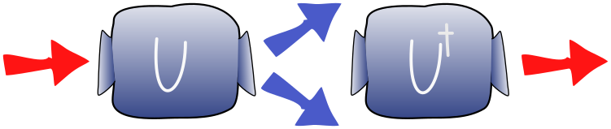
Hamiltonians¶
The unitary operators \(U\) don’t appear out of nowhere, but arise in a principled way from physical properties of a quantum system. As a concrete example, let’s consider magnets. These have a north and a south pole. The magnet points in a direction (from south to north pole) which we will call \(S\):
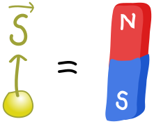
This is a vector in \(3\)-dimensional space. We’re used to big magnets, like the bar magnets you might have played around with in high school, but most subatomic particles, e.g., electrons, are also magnets! In this case, \(S\)gets the special name of spin vector (since we can explain the magnetic behaviour by pretending that the particle spins).
Interestingly, electrons can also be described as qubits \( \alpha \left|0\right\rangle + \beta \left|1\right\rangle \). The spin vector, telling us which way the little electron magnet points, is related in a simple way to Pauli operators: $\( S=(S_x,S_y,S_z)\propto(\left\langle X \right\rangle,\left\langle Y \right\rangle,\left\langle Z \right\rangle) \)$
Now that we have this connection between magnets and qubits, we can do some physics. If we put a little magnet in the vicinity of a much bigger magnet (one from your fridge for instance), it will want to align itself with the big field:
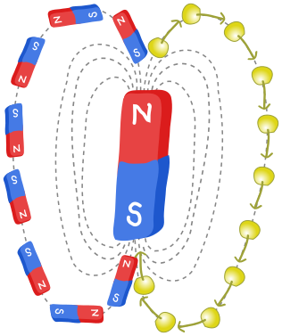
Why do little magnets like to align with the big magnets? For the same reason that balls roll downhill, namely, that it reduces potential energy. If we imagine the potential energy of the little bar magnet as an undulating energy landscape, valleys are where it aligns with the big magnetic field, and hills where it anti-aligns, i.e., points in the opposite direction:
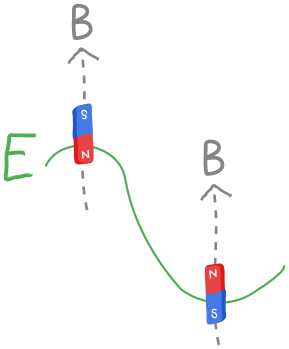
(For historical reasons, the magnetic field is called \(B\).) So, we expect that if we place an electron in the field of a big magnet, it will try to align itself somehow. Thus, the unitary \(U\) associated to time evolution should somehow be connected to the energy of the electron considered as a little magnet. For simplicity, let’s imagine that the magnetic field \(B\) points in the \(Z\) direction:
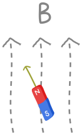
The classical potential energy for the electron is $\( E=-\frac{eB}{m_e}S_z \)\( where \)e\( is the electron charge, \)m_e\( is its mass, and \)S_z\( is the \)z$-component of the spin vector. We picture this below:
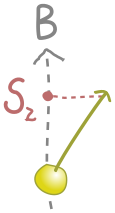
The energy is smallest (a valley) when \(S_z\) is largest, which corresponds to the spin lining up with the field in the positive \(z\) direction. Similarly, the energy is largest (a hill) when \(S_z\) is smallest, and the spin anti-aligns with the field, in the negative \(z\) direction.
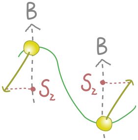
So far, all of this is classical. In quantum mechanics, energy is not a number but a measurement, e.g., the expectation value of Pauli \(X\),\(Y\) and \(Z\) observables, or any other Hermitian operator. The observable which measures energy is called the Hamiltonian \(\hat H\) , with a hat to distinguish it from the Hadamard gate, and it plays a central role in the black boxes of quantum physics.
Our first task is to turn the expression (\(1\)) into an observable. This turns out to be easy. The length of the spin vector \(S\) is just how much spin the electron carries. This turns out to be \(\hbar/2\), where \(\hbar\) is Planck’s (reduced) constant. (You can learn more about “quantization” of spin in a course on quantum mechanics.) We still need an operator, and the fact that this is the \(z\) component of the spin gives us a clue to associate it with the Pauli \(Z\) : $\( S_z\rightarrow\frac{\hbar}{2}Z \)$
So, the resulting Hamiltonian is
Our physical picture of the electron is simply related to the measurement outcomes for \(Z\):
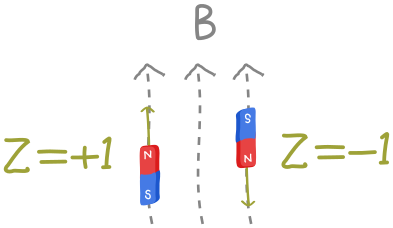
There’s nothing mysterious about this operator. If we had a circuit which prepared an electron in some state, then put it in the magnetic field, we would simply make a \(Z\) measurement and multiply by \(-\frac{e\hbar B}{2m_e}\)
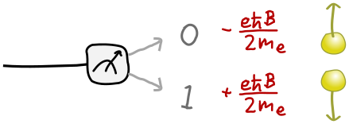
Now that we have a Hamiltonian, let’s return to the problem of how our electron bar magnet changes with time. We know that, for a time \(t\) , there is some unitary operator \(U\) that realizes the time-evolution for the state of the electron, \( \left|\psi(t)\right\rangle = U(t)\left|\psi(0)\right\rangle\), where \(\left|\psi(0)\right\rangle\) is the initial state. What is the unitary \(U(t)\)? This question was answered in general by Erwin Schrödinger in 1926, so it is called Schrödinger’s equation:
In our case
This is just a \(Z\) rotation! Once again, we’ve already seen this in the context of quantum computing. We can implement the time evolution of an electron state \( \left|\psi\right\rangle \) as a circuit:
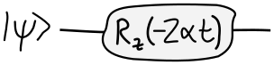
Let’s see what this does to our electron in the simple case where the qubit starts in state \( \left|0\right\rangle \). This is aligned with the field in the \(z\) direction, a claim we can check by evaluating the vector \((\left\langle X \right\rangle,\left\langle Y \right\rangle,\left\langle Z \right\rangle)\):
(We shouldn’t be surprised that \( \left|0\right\rangle \) is associated with the positive \(z\) direction, because it’s an eigenvector of the \(Z\) operator with positive eigenvalue; we will see a more general relationship between spins and eigenvectors below.) But the effect of \(U(t)\)on this state is kind of boring! We can expand \(e^{i\alpha t Z }\) as a Taylor series in \(Z\), by analogy with the Taylor series for the ordinary exponential:
Acting on \( \left|0\right\rangle \) with any number of powers of \(Z\) just gives us \( \left|0\right\rangle \) back, so
All we get is a phase! Making the time-dependence a bit more explicit, if \( \left|\psi (0)\right\rangle = \left|0\right\rangle \), then \( \left|\psi (t)\right\rangle =e^{i\alpha t } \left|0\right\rangle \).
Send it after class¶
What is the situation if \( \left|\psi (0)\right\rangle = \left|+\right\rangle \) ?
Approximating exponentials¶
Now we know how to simulate a single electron in a magnetic field. What about two electrons? If they are far away, they don’t know about each other and won’t interact at all! They only care about the big magnetic field:
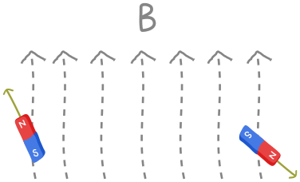
As a result, the measured energy of the system will just be the sum of the energy for the first electron and the second electron separately. If the magnetic field points in the \(z\)-direction (once again, just for simplicity) then the resulting Hamiltonian is
where \(Z_0=Z \otimes I\) is the Pauli \(Z\) operator on the first electron and \(Z_1=I \otimes Z\) is the Pauli \(Z\) on the second. (The subscripts indicating which electron the operator acts on are indexed in the same way as wires on PennyLane.) If we wanted to measure the energy in a circuit, we could just take two measurements in the computational basis, and convert them to energies as below:
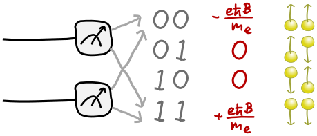
Because these electrons are independent, evolving the system in time should consist of evolving the first and second states independently. We also know what those independent parts look like, since in the last node we learned how to time-evolve an individual electron. So, with \( \alpha=eB/2m_e\) as before, we’re naturally led to guess that the combined unitary is just a product of unitaries on each electron:
in circuit form:
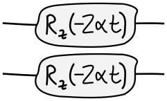
Is this neat formula true? Schrödinger’s equation tells us that
So our neat formula will be true as long as
This should seem familiar: it’s the usual index law for exponentials, \(e^{x+y}=e^x e^y\) , but now with matrices \(Z_0\) and \(Z_1\) instead of numbers \(x\) and \(y\). And in fact, the proof works the same way!
The definition of the exponential is the same,
where \(I\) is the identity matrix. (This is equivalent to the Taylor series definition, but the limit will be more useful here.) Our argument almost goes through as before, except for one important subtlety. The innocuous-seeming jump
isn’t always true if we replace \(x\) and \(y\) with matrices \(A\) and \(B\). This will be true only if \(A\) and \(B\) happen to commute. Since the Paulis \(Z_0\) and \(Z_1\) acting on separate electrons can be reordered:
the above relation will be valid. It’s easy to see this in terms of the circuit. Since the \(Z\) gates act on separate wires, we can freely drag them past each other: 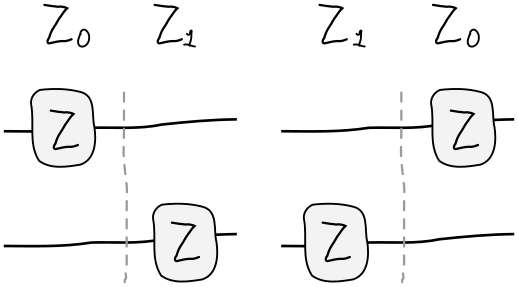
However matrices do not always commute! A simple example is Pauli matrices, e.g., \(XY=Z\) while \(YX=-Z\). Physically, we will have problems when our electrons get too close and feel each other’s magnetic field. They will interact, and in the simplest case, want to anti-align, just like iron filings arranging themselves along field lines: 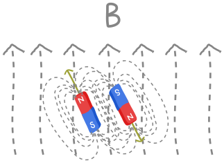
This introduces an energy cost for spins aligning, measured classically by a term \(JS_1\cdot S_2\), where \(J\) captures the strength of the interaction. Quantum-mechanically, this leads to a Hamiltonian
since \(S\rightarrow\hbar/2(X,Y,Z)\). Each of the terms in the Hamiltonian is individually easy to exponentiate, as you can check in the next exercise. The problem is that they don’t commute!
Most of the Hamiltonians Nature gives us do not split into commuting terms, even if (as often happens) the component terms are themselves simple and easy to exponentiate. It seems as if each time we want to run a simulation, we need to solve some horrible matrix exponential that cannot be decomposed into simpler parts. But it turns out we can simply reinterpret commutation in an extremely useful way. The Taylor expansion of the exponential \(e^x\approx 1+x\) , for small \(x\) , has the analogue
for matrices \(A\). Then we arrive at the famous Trotter-Suzuki decomposition
The formula gives us a general method for simulating quantum systems called Trotterization. Suppose our Hamiltonian is a sum of terms
and each unitary \(e^{-it\hat H_1/hbar}=U_1(t)\),\(e^{-it\hat H_2/hbar}=U_2(t)\), is easily simulated. Even if \(\hat H _1\) and \(\hat H _2\) don’t commute, we can split time evolution \(U(t)\) by \(t\) into \(n\) steps and interleave, with an error of order \(1/n\):
Thus, we can replace \(U(t)\) with the circuit
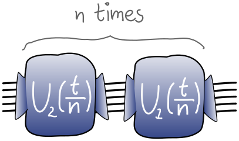
send it after class¶
Consider a Hamiltonian
Trotterize this Hamiltonian into \(n\) time steps and write the corresponding \(U\)
send it after class¶
Generalise Trotterization to a Hamiltonian that has \(L\) simple pieces
send it after class¶
Complete the function below for simulating two distant electrons in a magnetic field.
n_bits=2
dev = qml.device("default.qubit", wires=range(n_bits))
@qml.qnode(dev)
def two_distant_spins(B, time):
"""Circuit for evolving the state of two distant electrons in a magnetic field.
Args:
B (float): The strength of the field, assumed to point in the z direction.
time (float): The time we evolve the electron wavefunction for.
Returns:
array[complex]: The quantum state after evolution.
"""
e = 1.6e-19
m_e = 9.1e-31
alpha = B*e/(2*m_e)
##################
# YOUR CODE HERE #
##################
return qml.state()
---------------------------------------------------------------------------
NameError Traceback (most recent call last)
Input In [1], in <cell line: 2>()
1 n_bits=2
----> 2 dev = qml.device("default.qubit", wires=range(n_bits))
4 @qml.qnode(dev)
5 def two_distant_spins(B, time):
6 """Circuit for evolving the state of two distant electrons in a magnetic field.
7
8 Args:
(...)
13 array[complex]: The quantum state after evolution.
14 """
NameError: name 'qml' is not defined